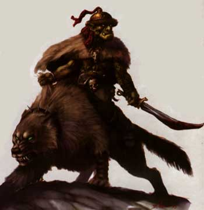

|
 |
Hobgoblin Comune | Hobgoblin Rokos | |
| Climate/Terrain | Qualsiasi eccetto Artico | Qualsiasi eccetto Artico | |
| Frequency | Uncommon | Uncommon | |
| Organization | Tribal | Tribal | |
| Activity Cycle | Any | Any | |
| Diet | Omnivore | Omnivore | |
| Intelligence | Average (8-10) | Average (8-10) | |
| Punti Combattimento | 6 (7 se veterano) | 7 (8 se veterano) | |
| Treasure | Comune | Comune | |
| Alignment | Lawful Evil | Lawful Evil | |
| No. Appearing | 1d10+1d8+2 | 1d6+1d3+1 | |
| Armor Class | 5 (corazza) [10 base] | 5 (corazza) [10 base] | |
| Movement | 9 | 9 | |
| Hit Dice | 1+1 (1d3+6 pf se veterano) | 2+2 (2d3+12 pf se veterano) | |
| Thac0 | 19 (17 se veterano) | 18 (16 se veterano) | |
| No. of Attacks | Arma | Arma | |
| Damage / Attacks | Arma (+2 se veterano) | Arma +1 (forza) (+3 se veterano) | |
| Special Attacks | None (arma eccellente se veterano) | None (arma eccellente se veterano) | |
| Special Defenses | None | None | |
| Magic Resistance | None | None | |
| Size | Medium | Medium | |
| Morale | Steady (11-12) | Elite (13-14) | |
| XP value | 35 (65 se veterano) | 60 (90 se veterano) |
Descrizione
Gli Hobgoblin sono una razza di fieri umanoidi amanti dell'arte della guerra. Il loro fisico è robusto e muscoloso essendo comunemente alti oltre 1,80 m.. I loro capelli sono stopposi ed il loro colore va dal rosso scuro al grigio scuro. La loro pelle ha comunemente un colore verde oliva ma può variare avvicinandosi al giallo sabbia od al verde fogliame. Hanno una dentatura molto sviluppata con canini che solitamente fuoriescono dalla bocca. Gli hobgoblin parlano una loro autonoma lingua ma vi è una possibilità pari al 20% che ogni hobgoblin conosca la lingua della civiltà più forte ed evoluta confini con il loro territorio. Queste creature sono dotate di un'infravisione di 18 metri.
Combat
Gli hobgoblin combattono con comuni tecniche di combattimento in squadroni ben armati ed organizzati. Essendo dotati di infravisione sono soliti cacciare e combattere anche durante le ore notturne per sfruttarle e colpire i loro nemici di sorpresa.
Gli hobgoblin
possono utilizzare abilmente qualsiasi arma ma per motivi legati al costo, alla
reperibilità ed alla tradizione utilizzano più spesso
alcune armi in metallo. Per determinare
come sono armati è possibile tirare 1d12:
1) Fante:
Scudo e Shoka: Iniziativa +7 Danni 2d4 (Metallo)
2) Fante:
Scudo e Carrikal: Iniziativa +6 Danni 1d6+1 (Metallo)
3) Fante:
Scudo e Mace Axe: Iniziativa +6 Danni 1d8 (Metallo, Taglio)
4) Fante:
Scudo e Flang Mace: Iniziativa +4 Danni 1d6 (Metallo, Taglio)
5) Fante:
Scudo e Footman's Mace: Iniziativa +7 Danni 1d6+1 (Metallo, Botta)
6) Fante:
Scudo e Scimitarra: Iniziativa +6 Danni 1d8 (Acciaio, Taglio)
7) Fante:
Great Mace: Iniziativa +8 Danni 1d8+1 (Metallo, Botta)
8) Fante di Sfondamento:
Glaive: Iniziativa +8 Danni 1d8 (Metallo,
Taglio), Polearm
9) Fante di Sfondamento:
Awl Pike: Iniziativa +7 Danni 1d8 (Metallo, Punta),
Polearm
10) Fante di Sfondamento:
Military Fork: Iniziativa +7 Danni 2d3 (Metallo, Punta),
Polearm
11)
Balestriere:
Balestra Leggera: Iniziativa +7 (+2) Danni
1d6+1 (Punta, Dist. 51/102/180)
e Flang Mace (senza
scudo)
12) Balestriere:
Balestra Leggera: Iniziativa +7 (+2) Danni
1d6+1 (Punta, Dist.
51/102/180) e Flang Mace
(senza scudo)
Per ogni hobgoblin incontrato si tiri 1d6 con un risultato pari ad 1 costui sarà un Hobgoblin Veterano (vedi sotto)
Habitat/Society
Gli Hobgoblin vivono in grosse comunità tribali solitamente rette da quelli di loro che hanno imparato le arti di una classe di personaggio (corrispondono al 10-15% del totale) e che per questo motivo prevalgono sui comuni Hobgoblin. La loro innata fierezza ed il loro naturale senso di superiorità sono elementi che spingono le comunità Hobgoblin a continue guerre e contese con le popolazioni circostanti (anche se più forti di loro). Non di rado costoro assoggettano creature più forti che utilizzano come schivi o come truppa ausiliaria. Spesso anche gli Ogre sono assoggettati da forti comunità Hobgoblin al fine di essere utilizzati come truppa da sfondamento o per effettuare lavori pesanti. Gli Hobgoblin sono avvezzi all'arte della guerra e non di rado utilizzano armi d'assedio o altri marchingegni di morte che acquistano avidamente da popolazioni con un più alto tasso di sviluppo tecnologico. Le loro comunità sono organizzate rigidamente e nonostante siano creature crudeli e contraddistinte da tradizioni sanguinarie e violente (come i sacrifici e le mutilazioni) mantengono un ordine non comune tra le culture umanoidi. Gli Hobgoblin inoltre ritengono il tradimento il più grande disonore e puniscono con la morte chi non rispetta la parola data. Proprio tale attitudine all'ordine ed alla disciplina rende gli Hobgoblin ricercati mercenari e spinge culture più evolute ed avanzate a stringere patti ed alleanze con le loro più grandi comunità.
Ecology
Gli Hobgoblin odiano gli elfi e non dimostrano alcuna pietà nei loro confronti. La forza degli Hobgoblin risiede nel loro numero e nella loro organizzazione militare. Il loro senso di superiorità sulle altre razze umanoidi (specie orcs, goblins, kobolds e gnoll) li porta ad iniziare guerre contro costoro al fine di assoggettarli ai voleri della loro comunità.
Hobgoblin Rokos
Alcuni Hobgoblin, selezionati in tenera età per la loro superiore prestanza e forza fisica, diventano più forti combattenti ed ottengono particolari privilegi all'interno della società Hobgoblin. Costoro, infatti, sono utilizzati come truppe scelte, guardie del corpo o ufficiali dell'esercito. Gli Hobgoblin Rokos possono essere riconosciuti per la loro altezza superiore di quasi due metri e la loro possente muscolatura. Gli Hobgoblin Rokos ottengono un bonus di +1 ai danni quando usano un'arma per la loro superiore forza (che può ritenersi pari a forza 16).
Hobgoblin Veterani
Alcuni Hobgoblin, sia Comuni che Rokos, sono combattenti più esperti e veterani abituati all'uso delle armi. Costoro possono riconoscersi facilmente in quanto indossano elmi con pennacchi più sfarzosi od altri indumenti indicanti il loro grado di quelli indossati dai comuni Hobgoblin. Questi Hobgoblin essendo veterani nell'uso dell'arma ottengono un bonus di +1 alla Thac0 ed ai Danni nonché 1 punto combattimento supplementare. L'arma trasportata dagli Hobgoblin veterani, inoltre, è di eccellente fattura di modo che, quando costoro la utilizzano ricevono un ulteriore bonus di +1 alla Thac0 ed ai Danni. Infine, poiché sono scelti per l'addestramento come veterani solo gli esemplari migliori della razza, per determinare i punti ferita di questi veterani si tiri 1d3+6 per gli Hobgoblin Comuni e 2d3+12 per gli Hobgoblin Rokos.